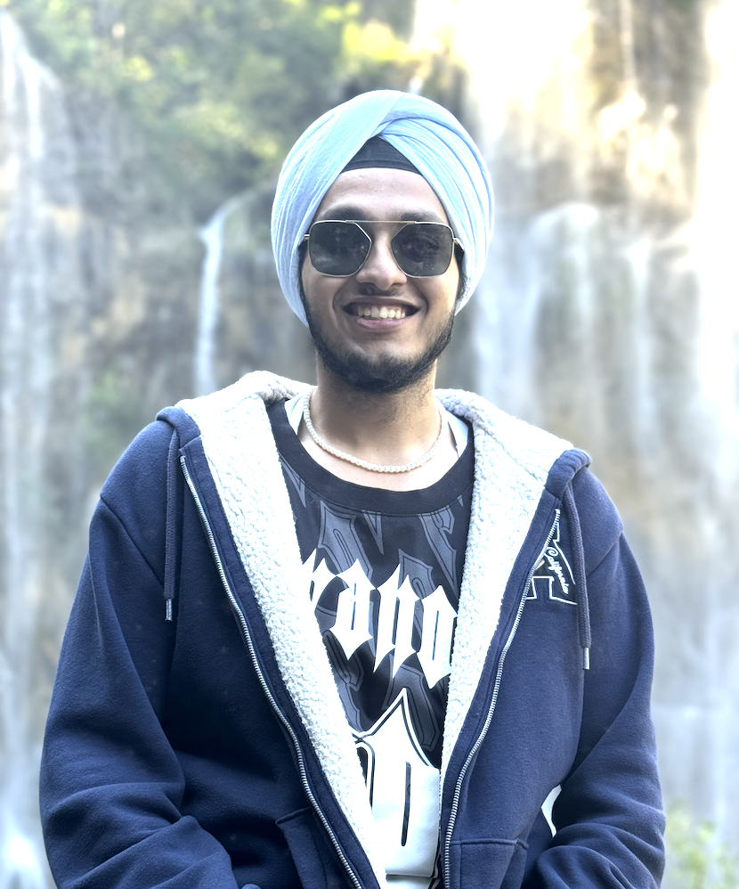

About Me

I'm a Master's student in Computer Science with a focus on Artificial Intelligence at the University of Freiburg, currently completing my thesis at Fraunhofer ISE and the Machine Learning Lab under Prof. Dr. Frank Hutter and Dr. André Biedenkapp — applying Bayesian Optimisation and machine learning to laser-based semiconductor manufacturing.
Before my Master's, I spent three years as a Software Engineer at Samsung R&D, where my automation tools saved ~149,000 engineering hours per year and earned me Employee of the Quarter twice. I work hands-on across the full ML lifecycle — data curation, feature engineering, stacked ensembles, tabular foundation models, AutoML and Bayesian Optimisation — on HPC clusters and GPU workflows.
I'm looking for full-time roles in applied machine learning, ML engineering, software engineering, MLOps, or AI research in Germany, starting September 2026.
Master's Thesis
Automated Crack Detection & Process Optimisation in Laser-Assisted Splitting of SiC Wafers using Bayesian Optimisation
Fraunhofer ISE · Machine Learning Lab, University of Freiburg — supervised by Dr. André Biedenkapp & Prof. Dr. Frank Hutter · Feb–Aug 2026
The laser process is a black box with 9 coupled parameters, and every physical experiment costs a wafer block and hours of measurement. I built an ML + Bayesian Optimisation loop that learns the process from data and proposes better laser recipes — reaching 85–95% crack coverage vs. 21–51% from manual tuning, in ~100 experiments instead of ~10,000.
1,930
unique laser recipes in dataset
0.52 → 0.92
surrogate R² — baseline → 6-model stack
95%
crack coverage vs. 21–51% manual
100×
fewer physical experiments needed
Work Experience
Mar 2024 – Present · Freiburg
Working Student — ML & Image Processing
Fraunhofer ISEComputer vision on scientific imagery & ML data infrastructure for reproducible experiments.
Aug 2021 – Sep 2023 · Noida, India
Software Engineer
Samsung R&D Institute2× Employee of the Quarter (2022) · Best Project Award (RPA SWEET) · RPA Best Team Award
Shipped 12 automation tools saving ~149,000 engineering hours/year; owned CI/CD for Samsung Knox on 1,000+ devices.
Jan 2021 – Jul 2021 · Noida, India
Software Engineer Intern
Samsung R&D InstituteBuilt two internal websites (JavaScript, Python, CSS) and contributed Samsung Knox automation test cases.
May 2019 – Jul 2019 · India
Web Developer Intern
Bharat Heavy Electricals Limited (BHEL)Developed the Student Tracker application using Eclipse and Tomcat 9.0.
Technical Skills
Machine Learning
Deep & Foundation Models
Computer Vision & Signal Processing
Programming
Data, MLOps & HPC
Languages
Projects
Education
Oct 2023 – Sep 2026 (expected)
M.Sc. Computer Science — AI focus
Albert-Ludwigs-Universität Freiburg · current grade: 1.9 · thesis defense August 2026
Key courses, labs & seminars
Jul 2017 – Jun 2021
B.Tech. Computer Science & Engineering
Amity University Uttar Pradesh · Noida, India
High School
Modern School, Barakhamba Road, New Delhi
Awards & Certifications
- Samsung Employee of the Quarter (Q1 & Q3 2022) · Best Project Award (RPA SWEET Tool)
- Samsung RPA Best Team Award
- Stanford Online: Algorithms — Design and Analysis
- UiPath Certified Professional Automation Developer Associate
- Microsoft: Programming in HTML5 with JavaScript & CSS3
- Google Digital Unlocked — Digital Marketing Expert
- NSIC Entrepreneurship Orientation Program
Publications
-
A Review on Cloud Computing
IEEE COMITCon 2019 — Int. Conference on Machine Learning, Big Data, Cloud and Parallel Computing
View on IEEE Xplore -
Cryptographic Technique for Communication Systems via the Diffie–Hellman Key Algorithm
2021
-
High Performance Computers and Computational Science
2020
Get In Touch
I'm finishing my Master's in September 2026 and looking for full-time ML / AI / software engineering roles in Germany. If you think I'd be a fit for your team, I'd love to hear from you.
gurmeher23@gmail.com · (+49) 179 9032502 · Freiburg im Breisgau, Germany